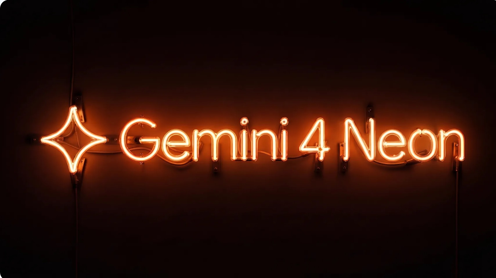
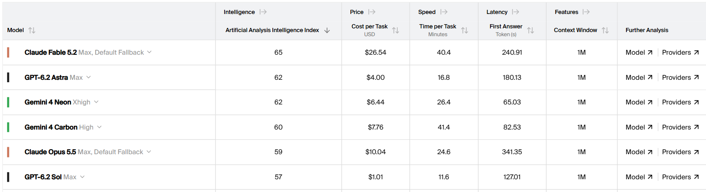

Google Gemini 4 Neon 发布，世界前沿 AI 实力大洗牌
Gemini 4 Neon 在 Artificial Analysis 最新榜单上追平 GPT-6.2 Astra 的 62 分。Claude Fable 5.2 仍以 65 分领先，但做完一道题的成本差距更大。

Google 在 11 月 18 日发布 Gemini 4 Neon。十天后，Artificial Analysis 的语言模型榜单显示，Neon 在最高推理档 Xhigh 拿到 62 分，和 OpenAI 的 GPT-6.2 Astra（Max）同分。Anthropic 的 Claude Fable 5.2（Max，默认回退配置）以 65 分领跑。榜首与身后的两个模型只差 3 分，但它们做完一项测试的花费相差数倍。
Neon 到底排第几？
在 Artificial Analysis 榜单默认折叠各模型推理档位的视图里，Fable、Astra、Neon 分列前三行。Astra 和 Neon 都显示为 62 分。展开其他推理档位，还能看到多个显示 62 分的配置。比较位次时，要把模型名、推理档位和榜单视图一起看。
11 月 18 日的首发评测曾记录 Neon 为 61 分，排在 Fable 和 Astra 之后。Artificial Analysis 在 11 月 24 日把指数更新到 v5.0.2，更新涉及终端任务的验证器和编程任务的轨迹扫描器。本文采用 11 月 28 日查看的 v5.0.2 榜单，发布日的数字留作历史对照。


同样是 62 分，成本和耗时已经拉开
同一张榜单里，Astra（Max）平均每项评测任务花费 4.00 美元、耗时 16.8 分钟。Neon（Xhigh）是 6.44 美元、26.4 分钟。Fable 的榜首配置达到 65 分，平均花费 26.54 美元、耗时 40.4 分钟。Astra 的 Xhigh 档位同样显示为 62 分，平均成本降至 2.52 美元。做上百次任务时，选哪个模型、开哪一档，都会影响用量预算。
这些数字是按 Artificial Analysis 的评测任务加权得到的均值。你的资料长度、输出规模和配置不同，最终账单也会不同。以 Google 公布的 Neon API 单价为例，每百万输入 token 收费 3 美元，每百万输出 token 收费 15 美元，缓存输入另有费率。模型可以处理文本、图像、音频和视频输入，支持最多 100 万 token 的上下文。
Google 自己的阵容也变了
Gemini 4 Carbon（High）在当前榜单上是 60 分，Gemini 4 Hydrogen（Xhigh）是 54 分。Neon 在 High 档就达到 60 分，该档位的平均评测成本约 3.74 美元，低于 Carbon 按标准费率计算的 7.76 美元。Neon 调到 Xhigh 会多拿 2 分，平均评测成本提高约 72%。
这让 Neon 的两档有了不同用途。比如批量读合同、提取表格字段或梳理会议材料，可以先拿 High 档试几份真实样本，检查看错条款、漏掉字段的频率。遇到需要在多份资料里追证据，或者判断互相冲突的说法，再试 Xhigh，看多花的时间和费用是否换来了更可靠的交付。
榜单前几名，怎么用到自己的工作里？
Artificial Analysis Intelligence Index v5.0.2 汇总九项评测，覆盖知识工作、自动化流程、编程、长文档理解和科学推理。总分适合用来缩小候选范围。决定要把什么交给模型，可以再用手头真正会反复做的任务试一次，记录完成率、错误类型、耗时和费用。
例如，拿同一份包含表格的 PDF，分别让 Neon、Astra 和 Fable 输出三条结论，并为每条附上页码和原始数字。先核对引用，再看哪一份更快交付、需要返工几次。如果三者都能做好，再比较成本。如果某个模型能发现另外两个都漏掉的关键例外，几个积分以外的那部分价值就有了具体含义。
截至这次快照，Anthropic 保持最高分，OpenAI 以更低的评测成本达到 62 分，Google 也进入了同一分数档。接下来的竞争，可以用我们每天真正交给 AI 的工作来观察。
资料来源
Google 发布公告（11 月 18 日，11 月 23 日更新）
blog.google/innovation-and-ai/models-and-research/gemini-models/introducing-gemini-4-neon/
Artificial Analysis 语言模型榜单（11 月 28 日查阅）
artificialanalysis.ai/leaderboards/models
Artificial Analysis 的 Neon 首发评测
artificialanalysis.ai/articles/gemini-4-neon-intelligence-gain
Artificial Analysis 档位对照
artificialanalysis.ai/models/comparisons/gemini-4-neon-vs-gpt-6-2-astra
封面和榜单截图分别来自 Google 与 Artificial Analysis，侵删。